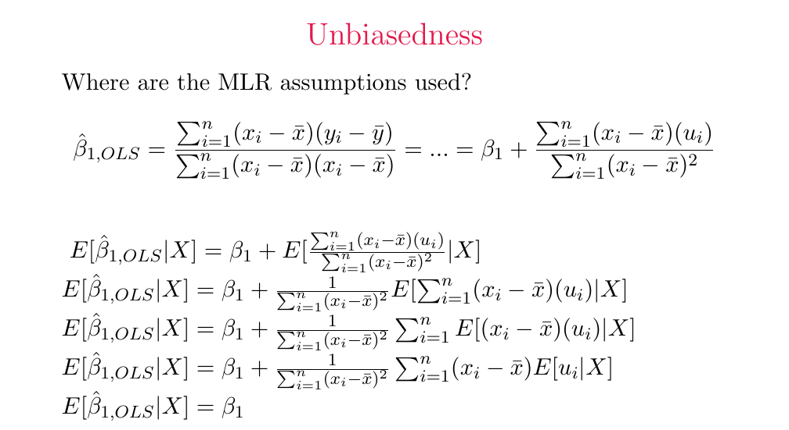

Derive conditional and unconditional OLS unbiasedness
Useful first: Derive and interpret scalar and matrix OLS
Lesson outline
- 02IntroductionSee the main question, learning objectives and prerequisites.
- 03Key definitions and conceptsGet familiar with the important terms and notation.
- 04One decomposition drives both proofsFor the stated quantities, centering gives the stated quantities.
- 05Unbiasedness: the repeated-sample averageAn estimator is unbiased when the stated quantities.
- 06The assumption ladderUse Wooldridge's numbering.
- 07Connect the reasoningExplore connect the reasoning.
- 08Worked exampleFollow a complete application of the reasoning.
- 09Practise the reasoningWork through written tasks, with optional support and solutions.
- 10Check your reasoning: an offline quizCheck your choices and see feedback without a connection.
- 11Check your understandingReview the key distinctions and check what you can explain.
- 12Test yourself laterTry another prepared question before rereading.
- 13SourcesFind the materials and limits behind the lesson.
Introduction
In this lesson, derive conditional and unconditional OLS unbiasedness.
2.1 What you’ll learn
- Derive the slope disturbance decomposition and conditional/unconditional mean
- Identify the role of each first four assumption
- Explain the limits of repeated-sample unbiasedness.
2.2 Before you begin
Check the foundations
State centered slope/intercept formulas, \(\sum_i(x_i-\bar x)\), and why \(S_{xx}\) must be positive.
Reveal foundation explanation
Slope \(S_{xy}/S_{xx}\); intercept \(\bar y-\text{slope}\,\bar x\); centered \(x\) sums \(0\); \(S_{xx}>0\) separates slope from intercept. then proceed when this check passes. Local foundation failures use the exact explanation here, not an improvised prerequisite curriculum.
Key definitions and concepts
- Conditional unbiasedness: The estimator’s expectation given the full design equals the true coefficient.
- Realized estimation error: The difference in one sample, which need not be zero under unbiasedness.
- Iterated expectation: Taking the expectation of the conditional expectation to obtain the unconditional expectation.
3.1 Notation and distinctions
Unbiasedness means \(E[\hat\beta_j]=\beta_j\) across repeated samples. Conditioning on \(X\) fixes weights/denominator. It does not fix disturbances or set each realized disturbance to zero. The first four named assumptions suffice; homoskedasticity and normality are not required for this mean result.
One decomposition drives both proofs
For \(y_i=\beta_0+\beta_1x_i+u_i\), centering gives \(y_i-\bar y=\beta_1(x_i-\bar x)+(u_i-\bar u)\). Substitute this into the OLS numerator:
The final step uses \(\sum_i(x_i-\bar x)=0\), so subtracting \(\bar u\) changes nothing. This algebra identifies the estimation error: sample co-movement between the regressor and disturbance, divided by sample regressor variation. Use the uncentered-disturbance version for unbiasedness and the centered version for consistency. ;
Unbiasedness: the repeated-sample average
An estimator is unbiased when \(E[\hat\beta_j]=\beta_j\). Expectation refers to repeated sampling from the population under the model, not to averaging different coefficients from a single fitted regression.
The lecture's theorem states that the linear-in-parameters, random-sampling, no-perfect-collinearity, and zero-conditional-mean assumptions imply unbiasedness for all OLS coefficients. Homoskedasticity and normality are not required for this result.
To see the role of exogeneity, condition on the observed regressor sample \(X=(x_1,\ldots,x_n)\). Then \(S_{xx}\) and the weights \(x_i-\bar x\) are fixed. Linearity of conditional expectation gives
The zero-conditional-mean assumption, together with random sampling, supplies \(E[u_i\mid X]=0\). Taking expectation again gives \(E[\hat\beta_1]=E[E[\hat\beta_1\mid X]]=\beta_1\). Linearity of the model supplies the initial decomposition; no perfect collinearity makes the denominator positive; random sampling supports the move from observation-level exogeneity to conditioning on the full sample design.

Source crop: Lecture 1, PDF p. 19. The weights and denominator can leave the conditional expectation because \(X\) is held fixed; exogeneity makes the remaining conditional disturbance means zero.
Unbiasedness means there is no systematic overestimation or underestimation across repeated samples. It does not guarantee that the estimate from a particular sample is close to the truth: dispersion can be large even when its center is correct. That is why precision and consistency are separate questions.
The assumption ladder
Use Wooldridge's numbering. State the assumptions by name as well as number, because different textbooks number them differently. The following notation makes the lecture's named assumptions explicit. For multiple regression let \(x_i=(x_{i1},\ldots,x_{ik})\) contain the \(k\) nonconstant regressors, and let \(X\) denote the full sample design, including an intercept. ;
| Assumption | Meaning and role |
|---|---|
| Linear in parameters (MLR.1) | \(y_i=\beta_0+\sum_{j=1}^k\beta_jx_{ij}+u_i\). Linearity refers to the coefficients: a regressor can itself be a transformation, provided the specified model remains linear in its parameters. This supplies the decomposition used in the estimator proofs. |
| Random sampling (MLR.2) | Observations are independent draws from the population under study. The lecture emphasizes representativeness and independence. This justifies the cross-sectional sampling argument and the law-of-large-numbers reasoning used later. A convenience sample is not made representative by running OLS. |
| No perfect collinearity (MLR.3) | No regressor is an exact linear combination of the others, and each nonconstant regressor has variation. In simple regression this requires \(S_{xx}>0\); in multiple regression it makes the design matrix full rank. Otherwise coefficients cannot be uniquely separated. |
| Zero conditional mean (MLR.4) | \(E[u_i\mid x_{i1},\ldots,x_{ik}]=0\). Once the included regressors are fixed, the average disturbance is zero. Under the sampling assumptions this yields \(E[u_i\mid X]=0\) in the source's conditional proof. |
| Homoskedasticity (MLR.5) | \(\operatorname{Var}(u_i\mid x_i)=\sigma^2\), a constant finite variance. With the preceding assumptions, this establishes the Gauss–Markov efficiency result. |
| Normality (MLR.6) | The disturbance has a conditional normal distribution; together with the preceding assumptions, this gives normal conditional coefficient distributions and exact null \(t\) and \(F\) distributions. |
Consider the first four assumptions for unbiasedness, adds homoskedasticity for BLUE, and adds normality for classical finite-sample inference. The formal statements here explain that sequence; they should not be read as claims that the seminar data automatically satisfy it. ;
Connect the reasoning
- From the linear population equation subtract sample means: \(y_i-\bar y=\beta_1(x_i-\bar x)+(u_i-\bar u)\).
- Insert into \(S_{xy}/S_{xx}\); cancel \(\beta_1 S_{xx}/S_{xx}\). Since centered \(x\) sums \(0\), the term involving \(\bar u\) vanishes: \(\hat\beta_1=\beta_1+\sum(x_i-\bar x)u_i/S_{xx}\).
- Conditional on the whole sample \(X, S_{xx}\) and centered weights are fixed. Thus \(E[\hat\beta_1\mid X]=\beta_1+S_{xx}^{-1}\sum(x_i-\bar x)E[u_i\mid X]\). Random sampling plus observation-level zero conditional mean supply \(E[u_i\mid X]=0\).
- The mean error term is \(0\). Iterated expectation gives \(E[\hat\beta_1]=E[E[\hat\beta_1\mid X]]=\beta_1\). For all coefficients, the note's matrix decomposition gives the same conditional argument \(E[\hat\beta\mid X]=\beta+(X'X)^{-1}X'E[u\mid X]=\beta\).
- Linear parameters allow decomposition; random sampling supports conditioning on the full sample; no perfect collinearity allows finite inverse/positive denominator; zero conditional mean eliminates mean errors. Homoskedasticity controls variance, not this mean; normality supports exact inference later.
- Realized estimation error generally remains nonzero. An unbiased estimator can have large dispersion; one coefficient, residual orthogonality or a high fit cannot certify its repeated-sample property.
Worked example
Practise the reasoning
Write your reasoning before revealing an explanation. Begin with support, then apply the ideas to another situation.
9.1 Written exercise 1
Complete centered \(y\) expression, disturbance decomposition, conditional expectation and iterated expectation.
Solve the following:
- For \(X=(1,2,3), \beta_1=2, S_{xx}=2\), explain why realized weighted \(u\) sum \(2\) gives \(\text{slope}=3\) but conditional means \(0\) give expected \(\text{slope}=2\).
- Name the four assumptions and why no normality is required.
- Include the fixed-\(X\) matrix mean argument.
- Required response components: Correct centered disturbance decomposition and cancellation;
- Valid conditional-to-unconditional mean reasoning, including matrix analogue;
- All four assumptions tied to specific proof steps;
- no homoskedasticity/normality requirement;
- Distinguishes realized error/residual identity from repeated-sample mean.
Show a hint
Pause before calculating or choosing an explanation:
- What quantities, actors or outcomes are being compared? Write their roles, units and dates beside them.
- Which condition decides whether the relationship applies? Check the relevant definition before using a formula or classifying the case.
- What would have to remain fixed for your comparison to be meaningful? Work through one link in the reasoning at a time.
- How could you check the direction, boundary case or alternative explanation before stating your conclusion?
A local draft for your own study.
Reveal explanation
Solution: Centered equation/decomposition as Explanation1–2. Realized \(\text{slope}=2+2/2=3\); \(\text{conditional expectation}=2+\sum_i(x_i-\bar x)0/2=2\);
iterated expectation \(2\). First four: linear parameters, random sampling, no perfect collinearity, zero conditional mean.
Normality is irrelevant to setting the conditional mean \(0\); realization need not equal mean.
Matrix counterpart: \(E[\hat\beta\mid X]=\beta+(X^{\top}X)^{-1}X^{\top}E[u\mid X]=\beta\).
9.2 Written exercise 2
Reproduce the scalar decomposition and conditional-to-unconditional proof.
Solve the following:
- For \(X=(0,1,2), \beta_1=4, u=(2,1,0)\), calculate a realized slope and then its conditional mean under \(E[u_i\mid X]=0\).
- Explain all four assumption roles and why heteroskedasticity, nonnormality or an inaccurate single estimate do not automatically defeat unbiasedness.
- Include the fixed-\(X\) matrix mean argument as well.
- Required response components: Correct centered disturbance decomposition and cancellation;
- Valid conditional-to-unconditional mean reasoning, including matrix analogue;
- All four assumptions tied to specific proof steps;
- no homoskedasticity/normality requirement;
- Distinguishes realized error/residual identity from repeated-sample mean.
A local draft for your own study.
Reveal explanation
Solution: \(S_{xx}=2\); weighted sum \((-1)(2)+0+(1)(0)=-2\); \(\text{slope}=3\).
Centered substitution removes \(\bar u\) via \(\sum_i(x_i-\bar x)=0\); fixed \(X\) lets weights/denominator leave expectation;
conditional \(u\) means \(0\) yield \(4\); iterated expectation \(4\).
Roles as Explanation5. Heteroskedasticity/nonnormality can alter variance/inference but first four conditions still yield unbiasedness;
one estimate can miss \(4\). Matrix counterpart: \(E[\hat\beta\mid X]=\beta+(X^{\top}X)^{-1}X^{\top}E[u\mid X]=\beta\) when full rank and conditional mean \(0\);
iterated expectation gives \(\beta\).
9.3 Written exercise 3
For fixed \(X=(1,3,5), \beta_1=-1, u=(0,1,4)\), derive the scalar decomposition and unbiasedness proof and compute realized slope.
Solve the following:
- Then explain the matrix mean argument and all four roles;
- decide whether zero fitted residual correlation, a high \(R^2\) or normal errors establish unbiasedness on their own.
- Required response components: Correct centered disturbance decomposition and cancellation;
- Valid conditional-to-unconditional mean reasoning, including matrix analogue;
- All four assumptions tied to specific proof steps;
- no homoskedasticity/normality requirement;
- Distinguishes realized error/residual identity from repeated-sample mean.
A local draft for your own study.
Reveal explanation
Solution: Mean \(\bar x=3\), \(S_{xx}=8\); weighted \(u\) sum \((-2)(0)+0+(2)(4)=8\);
realized \(\text{slope}=0\). Scalar derivation as Explanation1–4;
conditional mean \(-1\) under first four, unconditional mean \(-1\) by iteration. Matrix fixed \((X^{\top}X)^{-1}X^{\top}\) times conditional \(E[u\mid X]=0\).
Four roles as Explanation5. Residual identity/high \(R^2\)/normal errors alone do not establish zero conditional mean or other assumptions.
Normality/homoskedasticity not needed for unbiasedness.
9.4 Another chance to practise
Fresh O003-C v1: fixed centered \(x=(-2,0,2), S_{xx}=8, \beta_1=5\) and realized weighted \(u=-4\).
Solve the following:
- What are realized slope and conditional expected slope if \(E[u\mid X]=0\)?
A local draft for your own study.
Reveal explanation
4.5 and 5. The former uses actual weighted disturbances; the latter weighted conditional means 0. Narrow repair only.
Check your reasoning: an offline quiz
Choose one answer per question. Check individual answers or check the whole quiz. Each option includes feedback on the reasoning, and everything works offline.
Reveal explanation
Unbiasedness compares the sampling expectation to the parameter, not every sample value.
Reveal explanation
Condition on X so the OLS weights are fixed, then use \(E[u\mid X]=0\).
Reveal explanation
Iterated expectation averages the constant conditional expectation 2.
Check your understanding
Avoid these mistakes: expectation of ratio treated as ratio of expectations without conditioning, or claims unbiasedness makes each error \(0\). Correction: fix \(X\) to make the denominator and weights constants; exogeneity sets conditional disturbance means, not realizations, to \(0\).
- Derive the slope disturbance decomposition and conditional/unconditional mean
- Identify the role of each first four assumption
- Explain the limits of repeated-sample unbiasedness.
Test yourself later
Return to these questions after a break, before rereading the explanation. Use a question you have not just viewed.
12.1 Review question 1
For \(X=(2,4,6), \beta_1=3, u=(1,0,3)\), compute realized slope.
Solve the following:
- Derive centered decomposition and full conditional/unconditional unbiasedness proof, state all four roles and matrix extension, and explain whether this realized estimate and heterogeneous disturbance variance determine unbiasedness.
- Required response components: Correct centered disturbance decomposition and cancellation;
- Valid conditional-to-unconditional mean reasoning, including matrix analogue;
- All four assumptions tied to specific proof steps;
- no homoskedasticity/normality requirement;
- Distinguishes realized error/residual identity from repeated-sample mean.
A local draft for your own study.
Reveal explanation
Solution: \(S_{xx}=8\); weighted \(u=-2+6=4\); \(\text{slope}=3.5\). Decomposition/expectation steps as Explanation1–4, conditional and unconditional mean \(3\) if first four hold. Matrix fixed weights and conditional \(u\) means \(0\). Linear/sampling/rank/exogeneity roles; one realization cannot decide, heteroskedasticity alone does not break this mean proof.
12.2 Review question 2
For \(X=(-1,0,1), \beta_1=-2, u=(3,0,1)\), compute realized slope and prove conditional and unconditional unbiasedness from centered OLS.
Solve the following:
- Name all four roles, give matrix equivalent, and respond to “normal residuals and zero residual correlation prove the population slope is unbiased”.
- Required response components: Correct centered disturbance decomposition and cancellation;
- Valid conditional-to-unconditional mean reasoning, including matrix analogue;
- All four assumptions tied to specific proof steps;
- no homoskedasticity/normality requirement;
- Distinguishes realized error/residual identity from repeated-sample mean.
A local draft for your own study.
Reveal explanation
Solution: \(S_{xx}=2\); weighted \(u=-3+1=-2\); \(\text{slope}=-3\).
Under linear/sampling/rank/zero conditional mean, centered decomposition \(\to\) fixed weights \(\to\)\(E[u\mid X]=0\)\(\to\) conditional mean \(-2\)\(\to\) iteration \(\to\) unconditional mean \(-2\). Matrix \(\beta+(X^{\top}X)^{-1}X^{\top}E[u\mid X]=\beta\).
Residual normality/orthogonality do not establish population exogeneity; normality/homoskedasticity not required for unbiasedness.
Sources
Show materials and lesson scope
- Lecture 1, PDF p. 19
- Lecture 1, PDF p. 22
- Lecture 1, PDF pp. 16–18
- Lecture 1, PDF p. 19, conditional-expectation derivation
- Source, PDF p. 19
- Lecture 1, PDF p. 17
- Lecture 1, PDF p. 18
- Lecture 1, PDF p. 25
- Lecture 1, PDF pp. 16–19
- Lecture 1, PDF pp. 23–26
Numerical and contextual illustrations are hypothetical unless explicitly described as a reported result. Historical data, model assumptions and unresolved source differences retain their stated limits.
These exercises are for self-study. Viewing a prepared item or solution may make that item unsuitable as a fresh check in a tutor chat. This page does not record an assessed learning result.